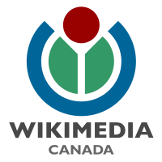

|  |
Join or Donate to Wikimedia Canada Wikimedia Canada is a not-for-profit organization that acts as the Canadian chapter of the Wikimedia Foundation. Along with its sister chapters across the world, Wikimedia Canada aims to create a world in which every single human being is given free and open access to the sum of all knowledge in their own language. For more information, see our "about us" page. Membership Wikimedia Canada is a membership-based organization, and our work would be impossible without the ideas and labour of our members. Wikimedia Canada membership is open to any person or organization who shares our goals. Membership entitles you to attend and vote at official members meetings, where we decide long-term policies and elect the board of directors. Where your donation goes Your donation goes to all of Wikimedia Canada's project across the country to promote the creation and distribution of free educational material. Our past projects include lectures to teach people how to write for Wikipedia and photography contests to create photos of Canadian landmarks under a free licence. In the future, we plan to do more projects like those, as well as partnering with museums and galleries to increase access to their collections, encouraging the creation of more free content about Canada, translating Wikipedia articles into Canada's aboriginal and immigrant languages, creating new technologies to help the Wikimedia Foundation's online projects, and supporting the initiatives of local groups of editors. For more about our projects, see our projects page. |
Join Wikimedia Canada: To buy a full Wikimedia Canada membership, chose your options below and click "Pay Now". You will be taken to PayPal to complete your transaction. Donate to Wikimedia Canada: Click this button to donate a custom amount to Wikimedia Canada. Currently, Wikimedia Canada cannot give tax reciepts for donations, but our application for charitable status is currently awaiting approval by Revenue Canada. |
|
When you join or donate, Wikimedia Canada asks for your real name, email address, and mailing address to let us stay in contact with you. This information is subject to our privacy policy regarding memberships. We do not give your information to anyone except when legally required to do so. You may opt-out of receiving messages from us at any time. If you have any questions about memberships, email our membership coordinator. For questions about donating, email our president. |